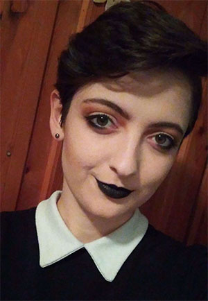

|

|
Póli Matilda 22 Kalocsa Informatikus könyvtáros végzettség Hobbik: olvasás, rajzolás,videózás Kedvenc film: A Gyűrűk Ura, Szilaj |
Bár könyvtárosként végeztem, szeretnék egy olyan képesítést szerezni, amely jobb lehetőségeket biztosítana, munkahely és pénzügyileg egyaránt. Mivel a családban már van Codecool alumni, így nem is volt kérdés, hogy ezt az iskolát válasszam. Azért a frontend képzésre esett a választásom, mert a programozás területén ez érdekel legjobban, illetve szeretem, hogy amit kódolok, annak hamar van látható, vizuális eredménye.